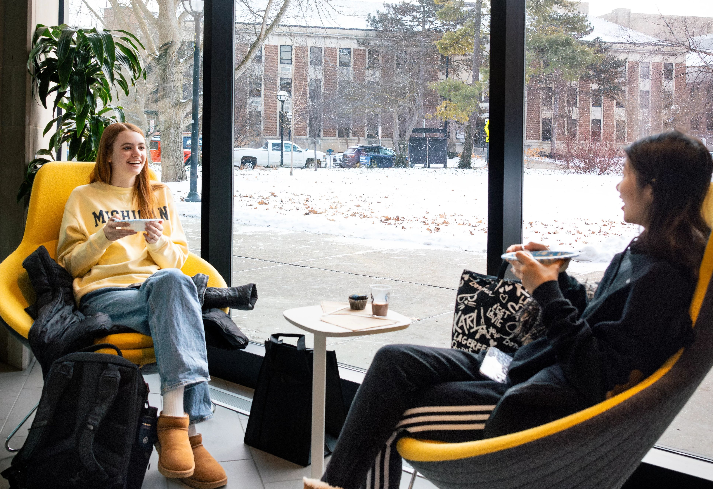
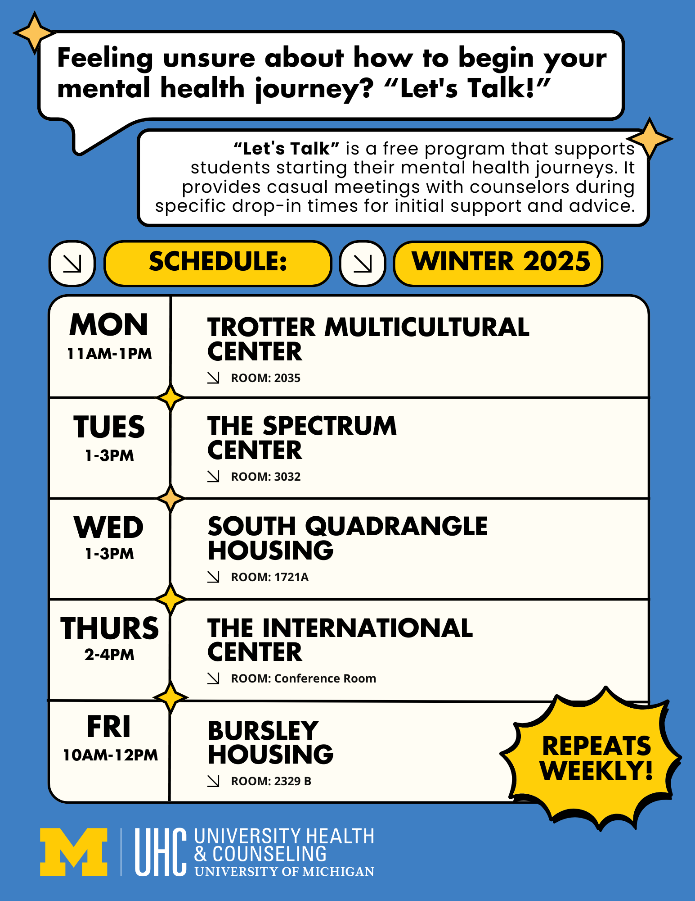

Welcome to CAPS
CAPS supports student well-being through free and confidential counseling, outreach, and urgent care resources.
Appointments & Support

Services
Let's Talk

Quick, drop-in consultations available across campus for all students.
First Year Guide
Tips and resources to help new students adjust to campus life and manage stress.
Workshops & Events
- Therapy Dog Visits
- Mindfulness Mondays
- Survivor Empowerment Series
Contact & Hours
- Mon–Thu: 8am–6pm
- Fri: 8am–5pm
- Sat–Sun: Closed
- Phone: (734) 764-8312
- Email: caps-uofm@umich.edu
- Location: Michigan Union, Suite 4079